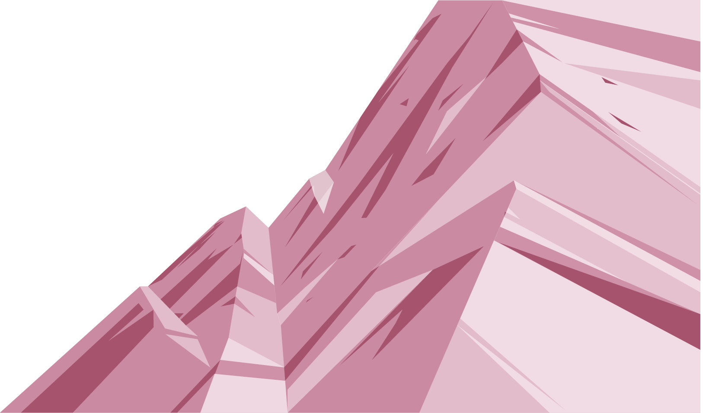
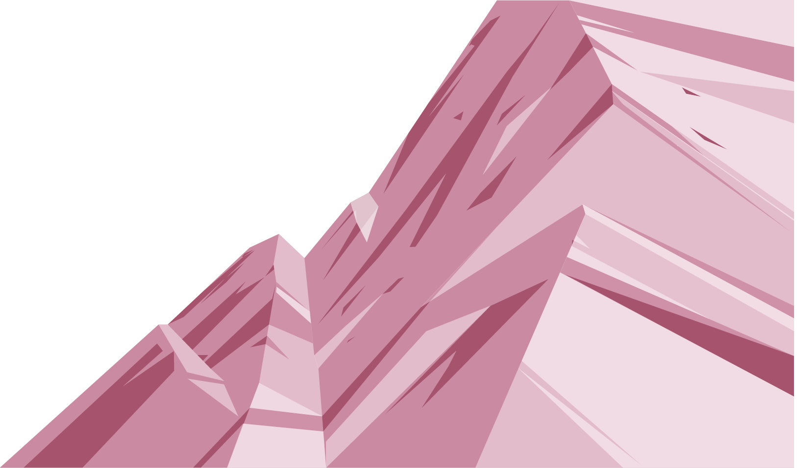
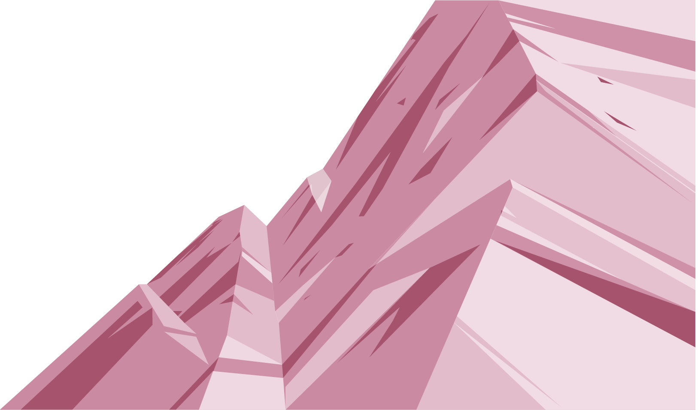
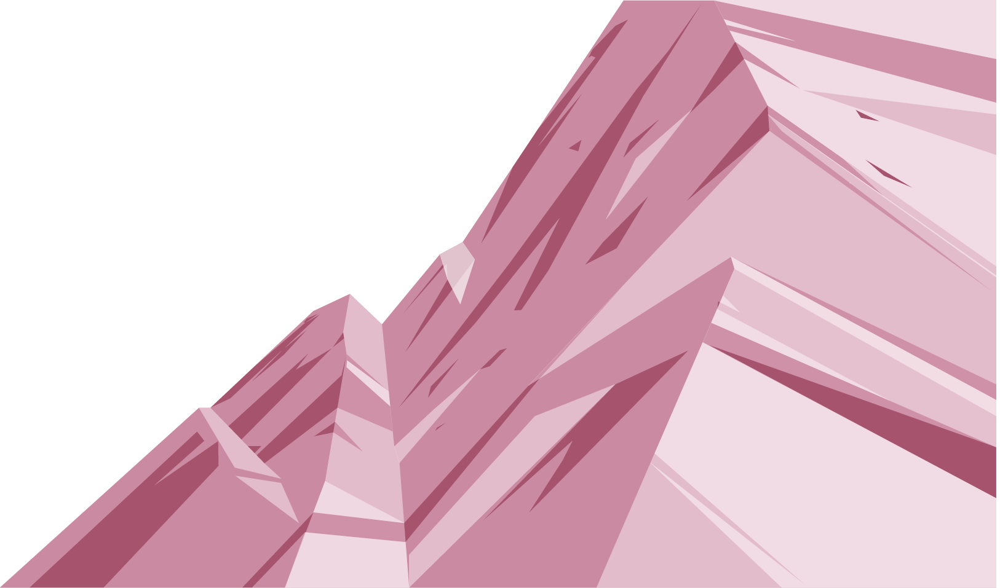

 

Tout juste arrivé au pied de cette montagne imposante, Ahaan se rendit compte qu'il n'était pas suffisamment préparé. Toujours déterminé, il se rendit donc à Katmandou, la ville la plus proche, pour s'équiper chaudement dans les commerces malgré ses maigres économies.
Une fois paré, il commença son ascension en suivant les sentiers principaux. Sur son chemin, il croisa quelques habitués de la montagne se baladant et tenant parfois d'amorcer la discussion avec le jeune Indien. Mais Ahaan n'avait pas de temps à perdre ! Il n'avait qu'un objectif en tête : trouver l'Edelweiss givré et le ramener.
Il monta, monta et arriva jusqu'à 3000 mètres d'altitude. Il se retrouva alors devant un magnifique mais rustique pont suspendu, dont il entama la périlleuse traversée. Aussitôt dit aussitôt fait, le vent se mit à souffler. Le souffle s’engouffrait dans les cordes du pont, ce qui le fit vaciller de gauche à droite. Ahann repensa alors à sa promesse et continua d'avancer d'un pas ferme. Tandis que la faim et le froid commencèrent à se faire sentir, le pont quand à lui tanguait de plus en plus, quand soudain... Son pied toucha le sol. Il était arrivé de l'autre côté !
Il était temps pour Ahaan de trouver un abri et de s'y réfugier pour la nuit. Heureusement, il disposait de tout le matériel nécessaire. Il se prépara un bon repas chaud puis s'endormit rapidement, jusqu'au lendemain...